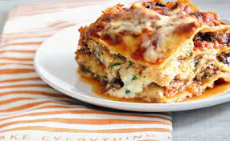

lasagna

Description
Lasagna is a traditional Italian dish made with alternating layers of pasta, cheese, sauce, and meat. While it's usually made with a tomato-based sauce, white sauce (known as béchamel) is an equally delicious option. Lasagna is a great dish to make for a crowd and can be made ahead of time.
Ingredients
- 1 pound sweet Italian sausage
- 3/4 pound lean ground beef
- 1/2 cup minced onion
- 2 cloves garlic, crushed
- 1 (28 ounce) can crushed tomatoes
- 2 (6 ounce) cans tomato paste
- 2 (6.5 ounce) cans canned tomato sauce
- 1/2 cup water
- 2 tablespoons white sugar
- 1 1/2 teaspoons dried basil leaves
- 1/2 teaspoon fennel seeds
- 1 teaspoon Italian seasoning
- 1 1/2 teaspoons salt, divided, or to taste
- 1/4 teaspoon ground black pepper
- 4 tablespoons chopped fresh parsley
- 12 lasagna noodles
- 16 ounces ricotta cheese
- 1 egg
Steps
- Prepare the meat sauce by browning ground beef, adding onions, garlic, tomatoes, and seasonings.
- Mix ricotta cheese, egg, Parmesan, and parsley to create the cheese filling.
- Cook lasagna noodles until al dente, then layer them in a baking dish.
- Alternate layers of meat sauce, cheese filling, and shredded mozzarella.
- Bake the assembled lasagna until cheese is melted and bubbly.
- Let it rest before serving for flavors to meld.